材料 5個分
※粉量を変えると自動計算されます
生地
塗り用
型
作り方
生地
STEP 1
ホームベーカリーに生地の材料を入れ、10分捏ねる
10分ほど捏ねて、粉気がなくなり、生地がひとまとまりになればOKです。この後に生地を伸ばして成形するため、ここではしっかり捏ね上げなくても大丈夫です。
10分ほど捏ねて、粉気がなくなり、生地がひとまとまりになればOKです。この後に生地を伸ばして成形するため、ここではしっかり捏ね上げなくても大丈夫です。
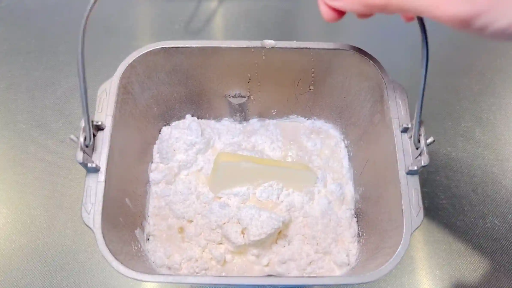
STEP 2
生地を取り出し、室温で40分おく
乾燥しないようにボウルをかぶせ、生地を休ませます。こうすることで生地がゆるみ、次の工程で伸ばしやすくなります。
乾燥しないようにボウルをかぶせ、生地を休ませます。こうすることで生地がゆるみ、次の工程で伸ばしやすくなります。
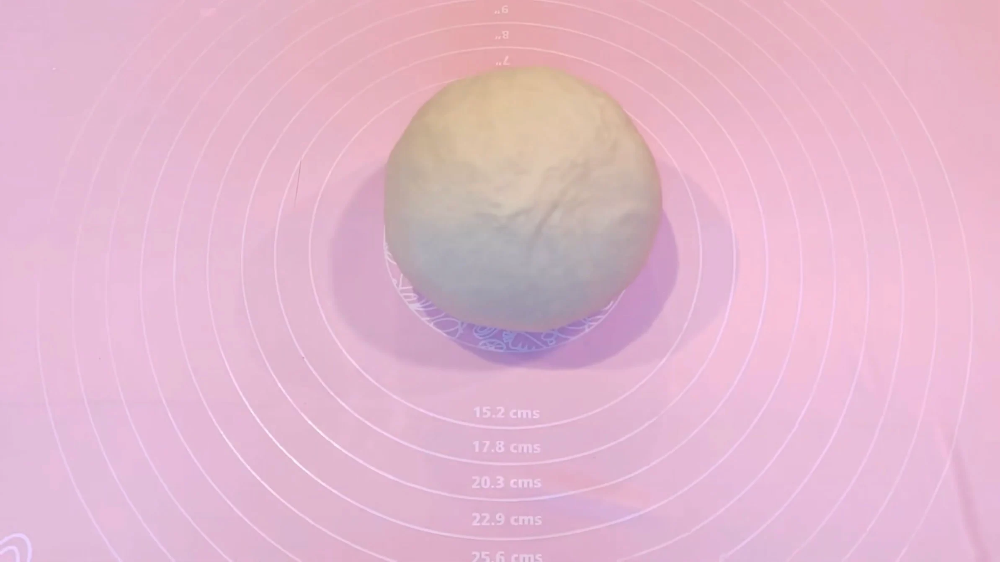
STEP 3
生地を縦35㎝×横40㎝に伸ばす
生地を四角に伸ばす際は、中央から左上、右上、左下、右下へと、めん棒を外側に向かって動かします。中央から四隅へ均等に伸ばしていくと、自然と四角い形に整っていきます。
生地を四角に伸ばす際は、中央から左上、右上、左下、右下へと、めん棒を外側に向かって動かします。中央から四隅へ均等に伸ばしていくと、自然と四角い形に整っていきます。
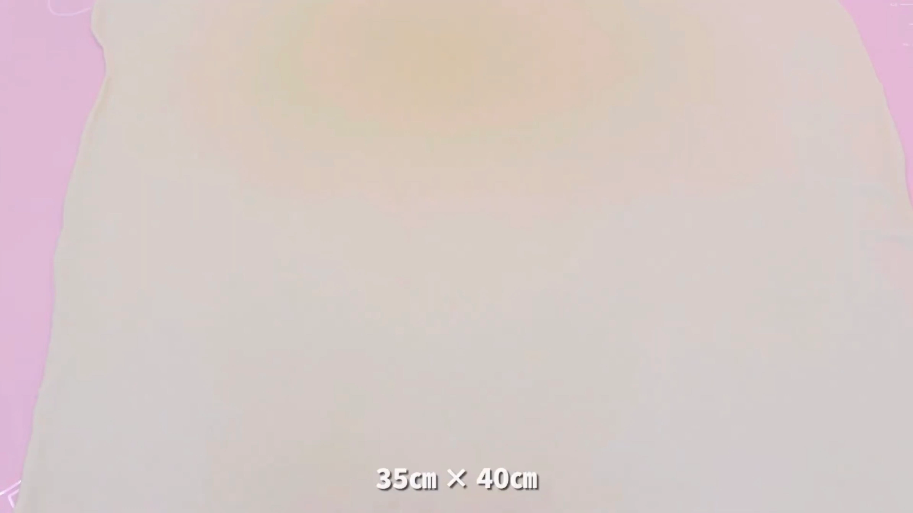
STEP 4
生地全体に溶かしバターを塗る
生地全体に溶かしバターを薄く均一に塗ります。バターを折り込むのではなく、塗った生地を折り畳んでいくことで、焼き上がったときにデニッシュらしい層を作ります。この後の工程でも溶かしバターを塗るので、ここでは半量を使います。
生地全体に溶かしバターを薄く均一に塗ります。バターを折り込むのではなく、塗った生地を折り畳んでいくことで、焼き上がったときにデニッシュらしい層を作ります。この後の工程でも溶かしバターを塗るので、ここでは半量を使います。
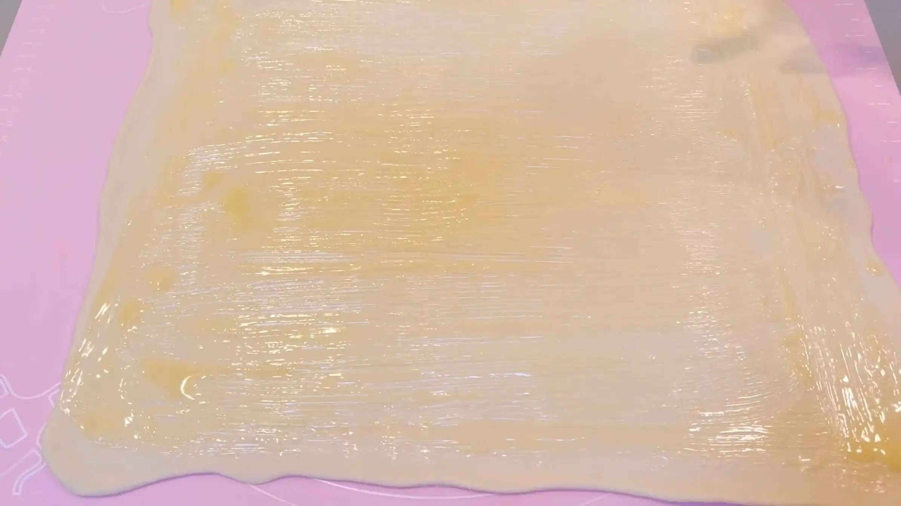
STEP 5
溶かしバターを塗りながら、生地を折り畳む（[動画 02:29]）
生地を10㎝幅で折り畳み、その都度、表面に溶かしバターを塗ります。バターを塗った生地を重ねていくことで層ができるため、折り目をそろえながら丁寧に重ねます。
生地を10㎝幅で折り畳み、その都度、表面に溶かしバターを塗ります。バターを塗った生地を重ねていくことで層ができるため、折り目をそろえながら丁寧に重ねます。
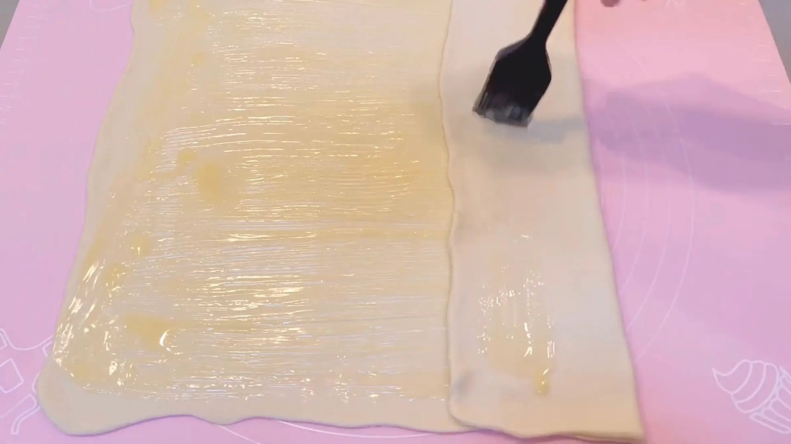
STEP 6
さらに溶かしバターを塗る（[動画 03:01]）
折り畳んだ生地の表面にも溶かしバターを薄く塗ります。バターを塗るのはこの工程で最後のため、残っているバターを全て塗り、使い切ります。
折り畳んだ生地の表面にも溶かしバターを薄く塗ります。バターを塗るのはこの工程で最後のため、残っているバターを全て塗り、使い切ります。
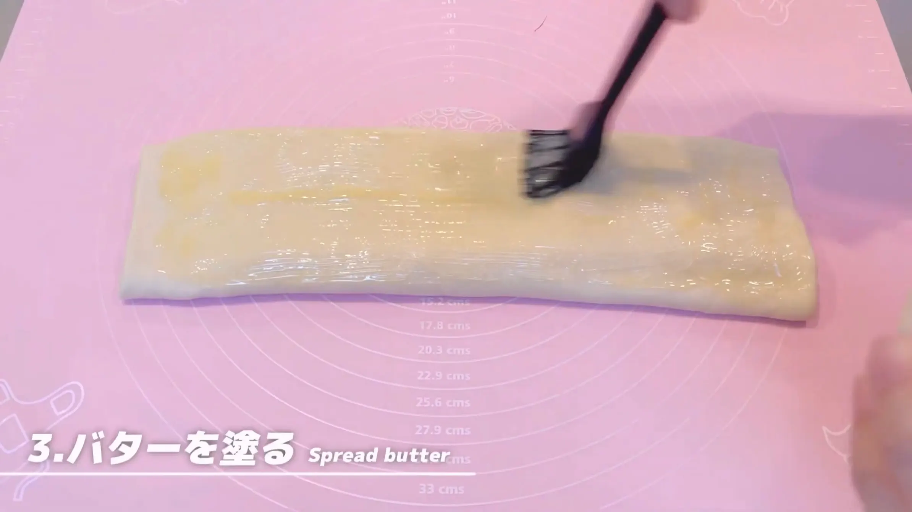
STEP 7
生地を巻く（[動画 03:12]）
生地を端からしっかり巻いていきます。
生地を端からしっかり巻いていきます。
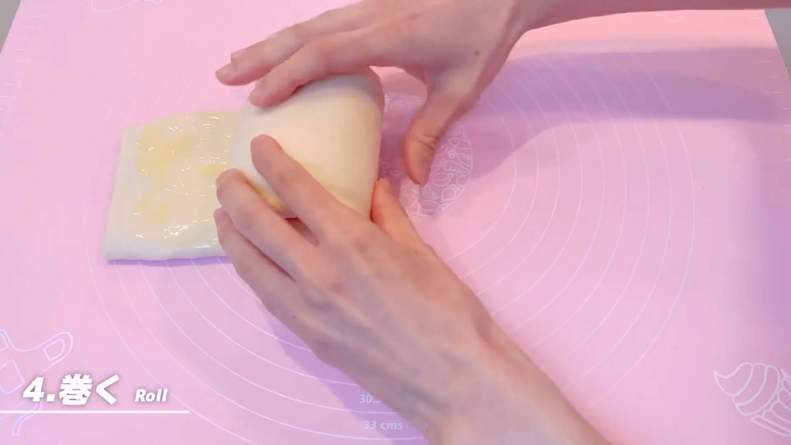
STEP 8
30分冷蔵する
生地が乾燥しないようにラップで包み、冷蔵します。冷やすことでバターが固まり、生地が扱いやすくなります。やわらかいままカットすると形が崩れやすいため、しっかり冷やしてから次の工程へ進みます。
生地が乾燥しないようにラップで包み、冷蔵します。冷やすことでバターが固まり、生地が扱いやすくなります。やわらかいままカットすると形が崩れやすいため、しっかり冷やしてから次の工程へ進みます。
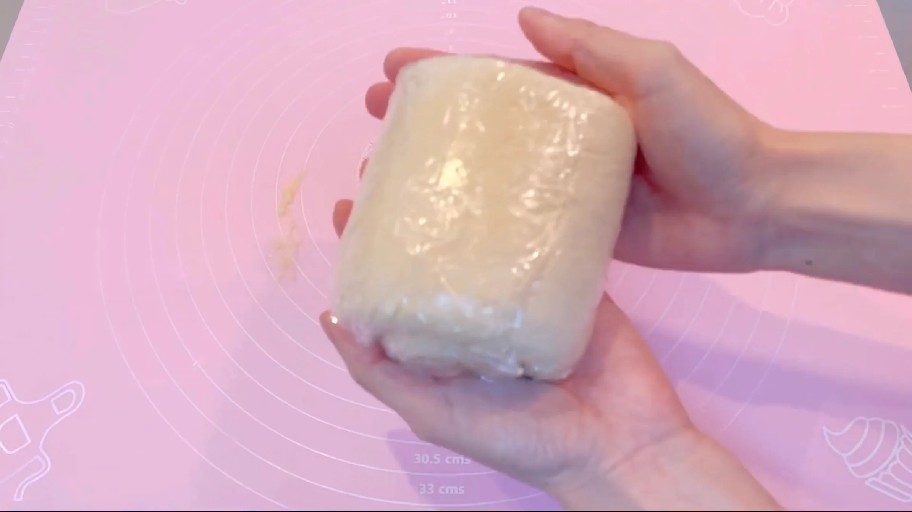
STEP 9
マフィン型にバターを塗る
型の内側にバターを薄く塗り、焼き上がった生地を取り出しやすくしておきます。
型の内側にバターを薄く塗り、焼き上がった生地を取り出しやすくしておきます。
STEP 10
生地を糸で5等分する（[動画 05:09]）
カットする前に、生地を少しだけ細長く整え、太さをマフィン型の直径に合わせておきます。こうすることで、生地が型にきれいに収まり、焼き上がりが整いやすくなります。包丁で切ると生地を押しつぶして層が崩れやすいため、糸を使ってカットします。
カットする前に、生地を少しだけ細長く整え、太さをマフィン型の直径に合わせておきます。こうすることで、生地が型にきれいに収まり、焼き上がりが整いやすくなります。包丁で切ると生地を押しつぶして層が崩れやすいため、糸を使ってカットします。
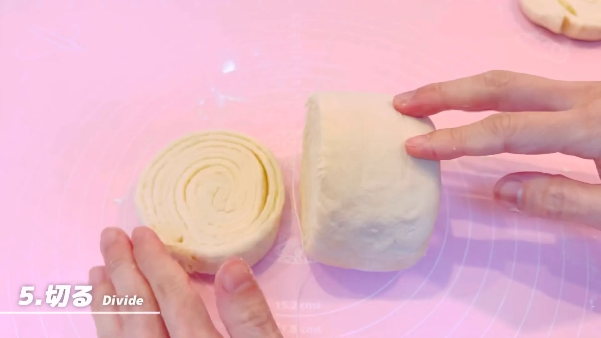
STEP 11
生地を型に入れ、室温で50分おく（[動画 05:40]）
生地をマフィン型に入れ、乾燥しないようにラップをかけて二次発酵させます。発酵時間は室温によって変わるため、50分を目安に、生地がふっくらと膨らんだら次の工程へ進みます。
生地をマフィン型に入れ、乾燥しないようにラップをかけて二次発酵させます。発酵時間は室温によって変わるため、50分を目安に、生地がふっくらと膨らんだら次の工程へ進みます。
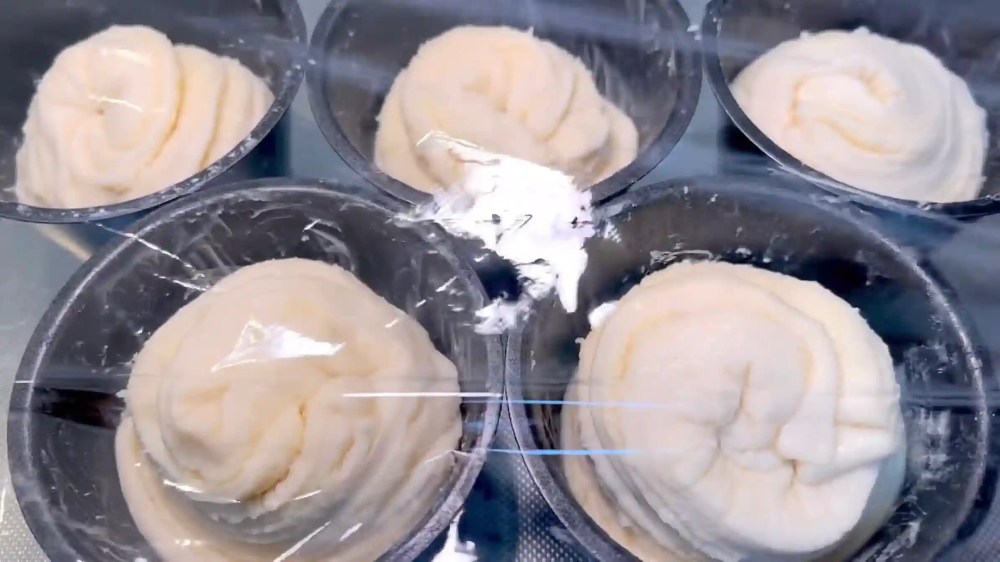
STEP 12
牛乳を塗り、グラニュー糖をかける
焼成前に生地の表面へ牛乳を薄く塗り、グラニュー糖をふります。表面に焼き色がつきやすくなり、グラニュー糖が焼けることで香ばしい甘みも加わります。
焼成前に生地の表面へ牛乳を薄く塗り、グラニュー糖をふります。表面に焼き色がつきやすくなり、グラニュー糖が焼けることで香ばしい甘みも加わります。
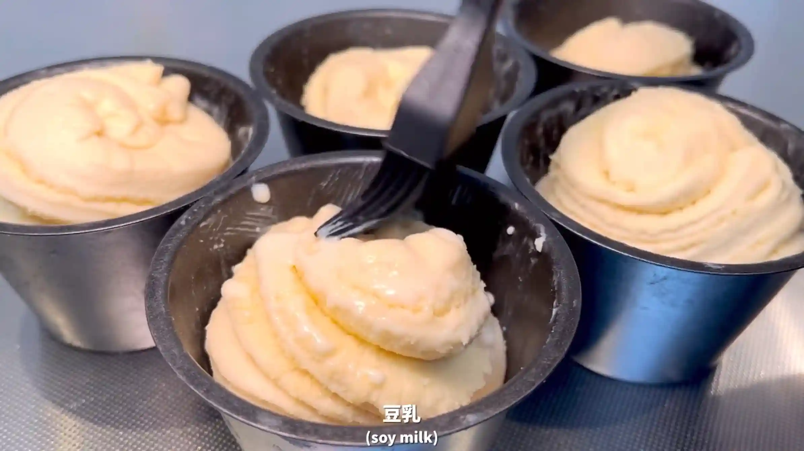
STEP 13
オーブン190℃で30分焼く
表面がきつね色になるまで焼きます。焼き時間は目安とし、焼き色を確認しながら、ご家庭のオーブンに合わせて調整してください。
表面がきつね色になるまで焼きます。焼き時間は目安とし、焼き色を確認しながら、ご家庭のオーブンに合わせて調整してください。
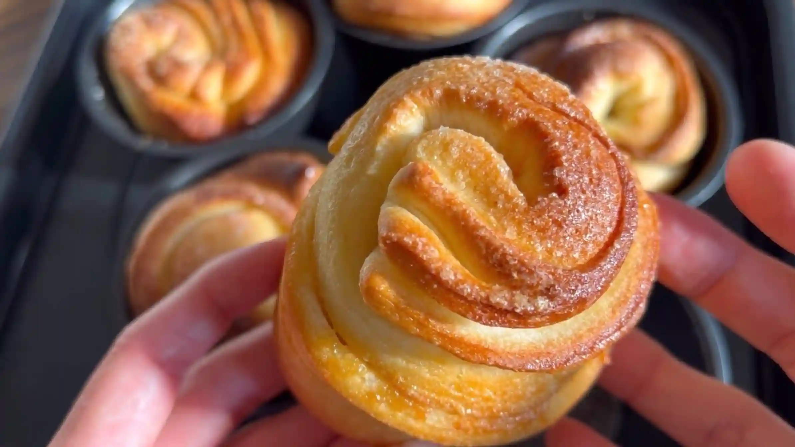
動画でチェック
おいしく作るためのワンポイントコラム
100均のマフィン型を使って、本格的な折り込み作業なしで焼き上げる『マフィン型デニッシュ』！難しいバターシートを使わず、シンプルな工程で作れるのがこのレシピの嬉しいポイントです。可愛い見た目とカリじゅわ食感を生み出す「3つのコツ」をまとめました。
① 手軽さと軽さを両立するバター塗りのコツ
デニッシュといえばバターシートですが、今回は難しいバターシートは使わず、大きく広げた生地に溶かしバターを塗るだけ。固形のバターに比べて塗りやすいので、気軽に作業できます。生地を大きく伸ばしてから塗る（35㎝×40㎝）ことで、バターが全体に薄くムラなく行き渡り、重たい層にならず軽い食感を生み出します。
② 綺麗な層を潰さない成形
面倒な折り込みは一切なし！生地を10㎝幅で3回折り畳み、端からくるくる巻くだけで成形は完了です。切り分ける前にお持ちのマフィン型の直径に合わせて生地の太さを軽く調整しておくと、型に入れやすくなって仕上がりも美しくなります。また、巻き終わった生地を一度冷蔵庫で30分冷やしてから糸で5等分にカットすることで、生地の断面が潰れず、まるで切り株のような美しい層を保つことができます。
③ カリじゅわ食感を生むマフィン型焼成のコツ
成形した生地は、バターを塗ったマフィン型に入れて焼き上げるのがポイント。190℃のオーブンで30分焼くことで、溶け出たバターを型がしっかり受け止め、生地の底をカリじゅわ食感に仕上げつつ、上に向かってふんわりとボリュームよく膨らませる効果があります。
バターが溶け出すため、気温に左右されやすいデニッシュ作りですが、気軽にいつでも作れるのがこのレシピの魅力！生地をペタペタ折り畳み、くるくる巻く成形はとっても楽しいですね。焼き上がり直前にオーブンから漂うバターの香りで、おうちの中はまるでパン屋さんのような幸せな空間に。カリじゅわ食感に焼き上がった美味しいデニッシュを、ぜひ楽しんでみてください。
① 手軽さと軽さを両立するバター塗りのコツ
デニッシュといえばバターシートですが、今回は難しいバターシートは使わず、大きく広げた生地に溶かしバターを塗るだけ。固形のバターに比べて塗りやすいので、気軽に作業できます。生地を大きく伸ばしてから塗る（35㎝×40㎝）ことで、バターが全体に薄くムラなく行き渡り、重たい層にならず軽い食感を生み出します。
② 綺麗な層を潰さない成形
面倒な折り込みは一切なし！生地を10㎝幅で3回折り畳み、端からくるくる巻くだけで成形は完了です。切り分ける前にお持ちのマフィン型の直径に合わせて生地の太さを軽く調整しておくと、型に入れやすくなって仕上がりも美しくなります。また、巻き終わった生地を一度冷蔵庫で30分冷やしてから糸で5等分にカットすることで、生地の断面が潰れず、まるで切り株のような美しい層を保つことができます。
③ カリじゅわ食感を生むマフィン型焼成のコツ
成形した生地は、バターを塗ったマフィン型に入れて焼き上げるのがポイント。190℃のオーブンで30分焼くことで、溶け出たバターを型がしっかり受け止め、生地の底をカリじゅわ食感に仕上げつつ、上に向かってふんわりとボリュームよく膨らませる効果があります。
バターが溶け出すため、気温に左右されやすいデニッシュ作りですが、気軽にいつでも作れるのがこのレシピの魅力！生地をペタペタ折り畳み、くるくる巻く成形はとっても楽しいですね。焼き上がり直前にオーブンから漂うバターの香りで、おうちの中はまるでパン屋さんのような幸せな空間に。カリじゅわ食感に焼き上がった美味しいデニッシュを、ぜひ楽しんでみてください。


マフィン型を使って手軽に焼く、成形が楽しい『マフィン型デニッシュ』のレシピです！今回は難しい折り込み作業を行わず、溶かしバターを使いながら渦巻き状に巻いて焼き上げます。コラムでは「手軽さと軽さを両立するバター塗りのコツ」「綺麗な層を潰さない成形」「カリじゅわ食感を生むマフィン型焼成のコツ」の3つのポイントをご紹介します。